clj-chart demo
Table of Contents

1. Histogram
(require '[clj-chart.chart :refer :all]) (require '[clj-chart.plot :refer :all]) (let [chart (histogram {:title "Hello Hisogram Chart" :x-axis "X" :y-axis "Y" :bins 6 :min 0 :max 12 :series {"S1" [0 1 2 3 4 5] "S2" [1 2 6 7 1 1 1 1] "S3" [1 2 6 7 1 1 1 1] "S4" [1 2 6 7 1 1 1 1 2 2 2 2] "S5" [1 2 6 7 1 1 1 8 9 10]}})] (store! chart nil "docs/figures/histogram.svg"))
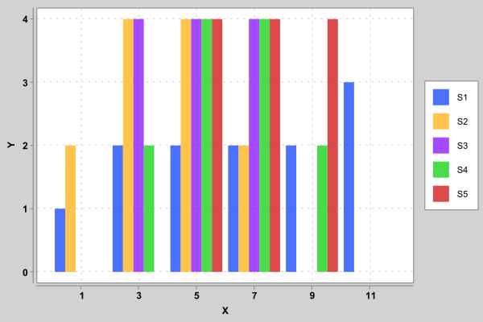
2. Quick Chart
(use '[clj-chart.quick]) (use '[clj-chart.plot]) (let [chart (quick {:title "Hello Quick Chart" :x-axis "X" :y-axis "Y" :legend "Y(X)" :xs [1 2 3] :ys [4 5 6]})] (store! chart nil "docs/figures/quickchart"))
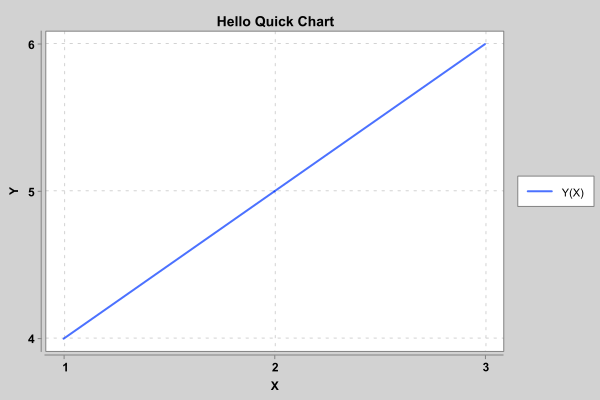
3. Area Chart
(use '[clj-chart.chart]) (use '[clj-chart.plot]) (let [chart (area {:title "Hello Area Chart" :x-axis "X" :y-axis "Y" :series [{:name "A" :xs [1 2 3 4 5] :ys [1 3 5 7 9]} {:name "B" :xs [1 3 5 7 9] :ys [2 4 6 8 10]}]})] (store! chart nil "docs/figures/areachart.svg"))
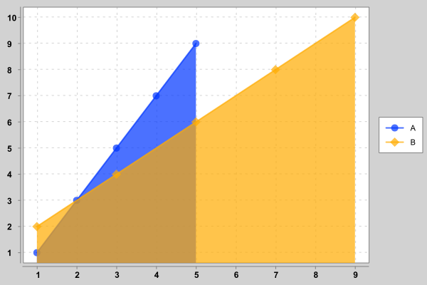
4. Pie Chart
(use '[clj-chart.chart]) (use '[clj-chart.plot]) (let [chart (pie {:title "Hello Pie Chart" :series [{:name "A" :value 10} {:name "B" :value 15}]})] (store! chart nil "docs/figures/piechart.svg"))
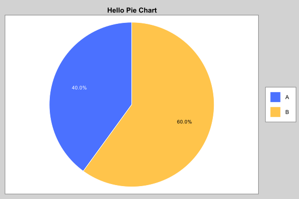
5. Donut Chart
(use '[clj-chart.chart]) (use '[clj-chart.plot]) (let [chart (donut {:title "Hello Pie Chart" :series [{:name "A" :value 10} {:name "B" :value 15}]})] (store! chart nil "docs/figures/donutchart.svg"))
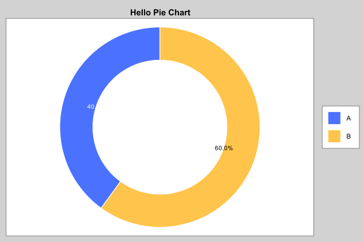
6. Scatter Chart
(use '[clj-chart.chart]) (use '[clj-chart.plot]) (let [chart (scatter {:title "Hello Scatter Chart" :series [{:name "A" :xs (repeatedly 100 #(rand-int 1000)) :ys (repeatedly 100 #(rand-int 1000))} {:name "B" :xs (repeatedly 100 #(rand-int 1000)) :ys (repeatedly 100 #(rand-int 1000))}]})] (store! chart nil "docs/figures/scatterchart.svg"))
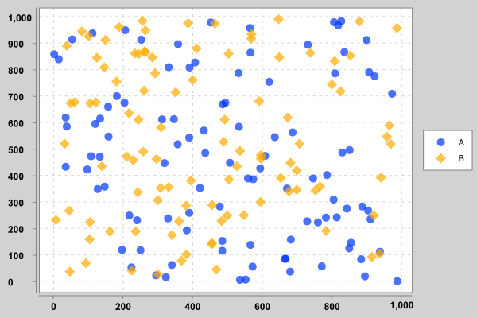
7. Bubble Chart
(use '[clj-chart.chart]) (use '[clj-chart.plot]) (let [chart (bubble {:title "Hello Bubble Chart" :series [{:name "A" :xs [1 2 3] :ys [3 4 5] :size [10 20 30]} {:name "B" :xs [3 3 4] :ys [3 4 5] :size [30 20 30]}]})] (store! chart nil "docs/figures/bubblechart.svg"))
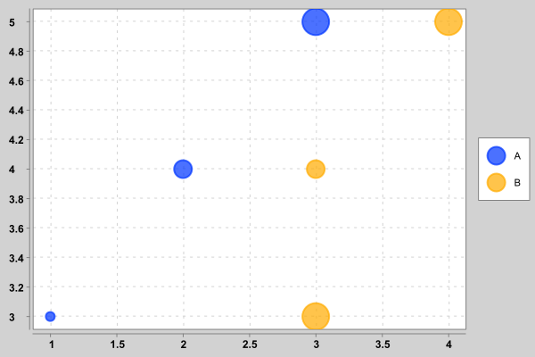
8. Bar Chart
(use '[clj-chart.chart]) (use '[clj-chart.plot]) (let [chart (bar {:title "Hello Bar Chart" :series [{:name "A" :xs [1 2 3] :ys [3 4 5]} {:name "B" :xs [1 2 3] :ys [3 5 7]}]})] (store! chart nil "docs/figures/barchart.svg"))
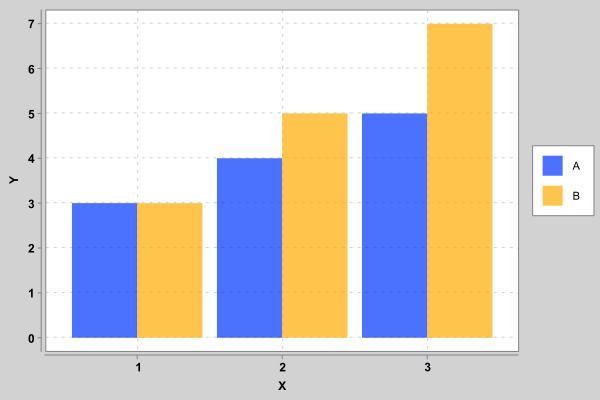
(use '[clj-chart.chart]) (use '[clj-chart.plot]) (let [chart (bar {:title "Hello Sparse Bar Chart" :series [{:name "A" :xs (range 1000) :ys (range 1000)}]})] (store! chart nil "docs/figures/sparsebarchart.svg"))
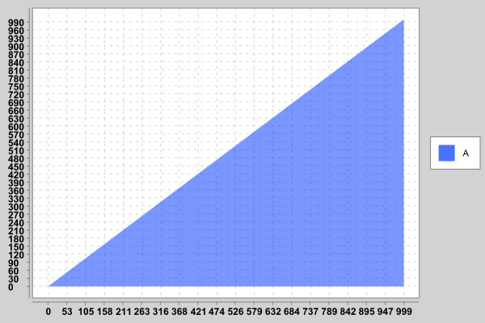
9. Step Chart
(use '[clj-chart.chart]) (use '[clj-chart.plot]) (let [chart (step {:title "Hello Step Chart" :series [{:name "A" :xs [1 2 3] :ys [3 4 5]} {:name "B" :xs [1 2 3] :ys [3 9 7]}]})] (store! chart nil "docs/figures/stepchart.svg"))
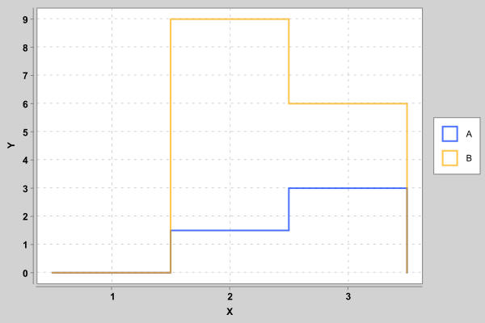
10. Line Chart
(use '[clj-chart.chart]) (use '[clj-chart.plot]) (let [chart (line {:title "Hello Line Chart" :series [{:name "A" :xs [1 2 3] :ys [3 4 5]} {:name "B" :xs [1 2 3] :ys [3 9 7]}]})] (store! chart nil "docs/figures/linechart.svg"))
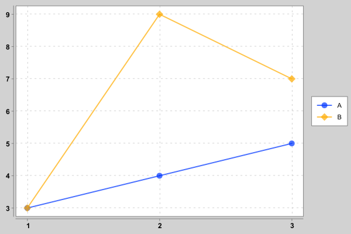
11. Logarithmic Line Chart
(use '[clj-chart.chart]) (use '[clj-chart.plot]) (let [chart (logarithmic-line {:title "Hello Logarithmic Line Chart" :series [{:name "A" :xs [-3 -2 -1 0 1 2 3] :ys (map #(Math/pow 10 %) [-3 -2 -1 0 1 2 3])} {:name "B" :xs [-3 -2 -1 0 1 2 3] :ys (map #(Math/pow 100 %) [-3 -2 -1 0 1 2 3])}]})] (store! chart nil "docs/figures/logarithmiclinechart.svg"))
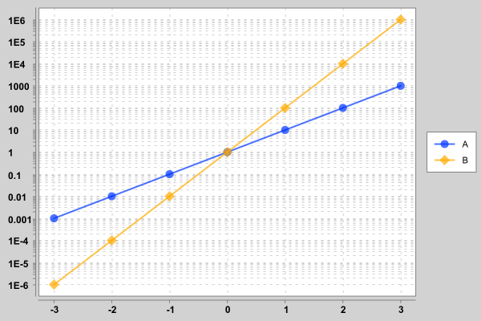